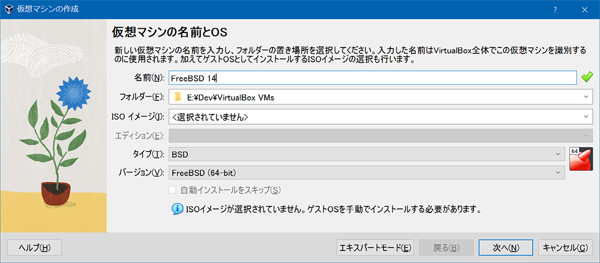
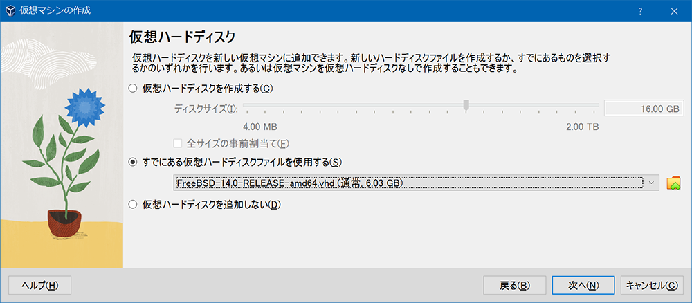
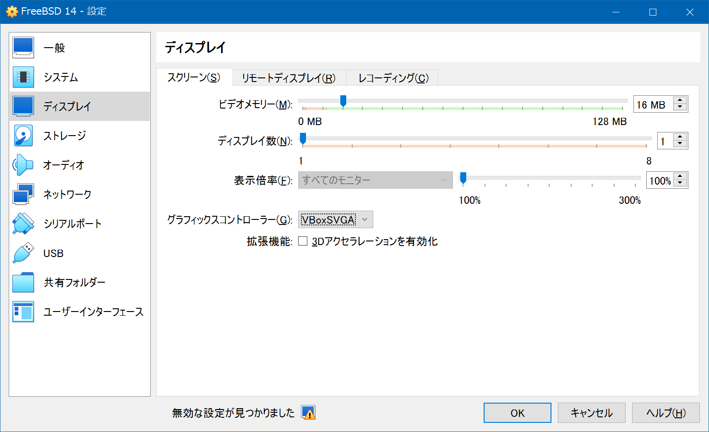
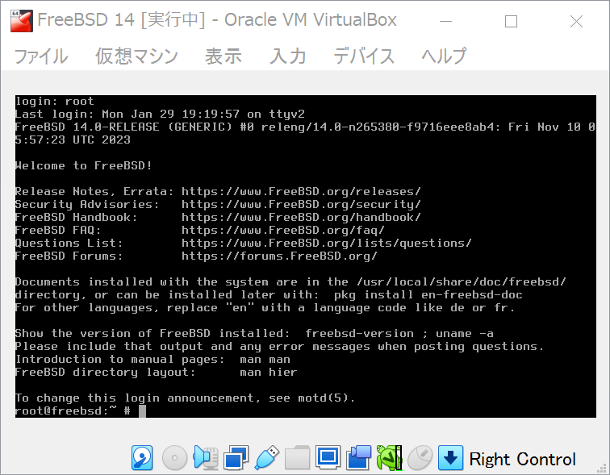

VirtualBox で FreeBSD 環境を作ってみる
Linux 環境は色々と触ってきたけど、macOS (Darwin) 以外の BSD 環境を触ったことがないなーと思い、初の UNIX 環境として FreeBSD を触ってみることにする。
ホストマシンは Windows 10、VirtualBox 7.0.14 にて検証した。
- VirtualBox 7.0.14 をインストールする
VirtualBox-7.0.14-161095-Win.exe - VirtualBox Extension Pack をインストールする (ダブルクリックで実行すればインストールできる)
Oracle_VM_VirtualBox_Extension_Pack-7.0.14.vbox-extpack
FreeBSD のイメージは公式ページで配布されている。
今回は v14.0 の、VHD 形式のイメージを選択した。
https://download.freebsd.org/ftp/releases/VM-IMAGES/14.0-RELEASE/amd64/Latest/FreeBSD-14.0-RELEASE-amd64.vhd.xz- 7-Zip で解凍
FreeBSD-14.0-RELEASE-amd64.vhd
- 7-Zip で解凍
VirtualBox で仮想メディアを作成していく。
- ファイル → 仮想メディアマネージャー → 追加 → 先ほど解凍した
FreeBSD-14.0-RELEASE-amd64.vhdを追加する -

そしたら仮想マシンを作成していく。
- 仮想マシン → 新規
- 
- 
仮想マシンを作成後、設定 → ディスプレイ → グラフィックスコントローラーを「VBoxSVGA」にする。
- 
仮想マシンを起動する。login: プロンプトが出たら root ユーザ名を入力すると、パスワードなしでログインができる。root0freebsd:~ # というプロンプトに変わったら、あとは自由に FreeBSD 環境を触れる。
- 
ちょっと触った感じ、vi も入っているし、MacOS のターミナルと同じような雰囲気で使えそう。